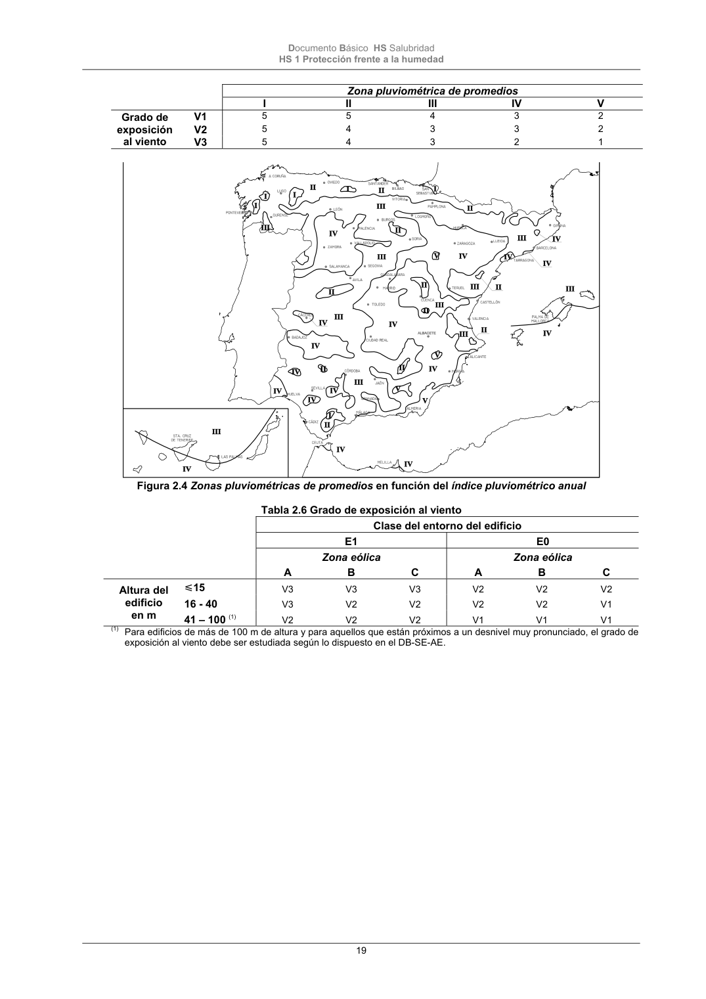
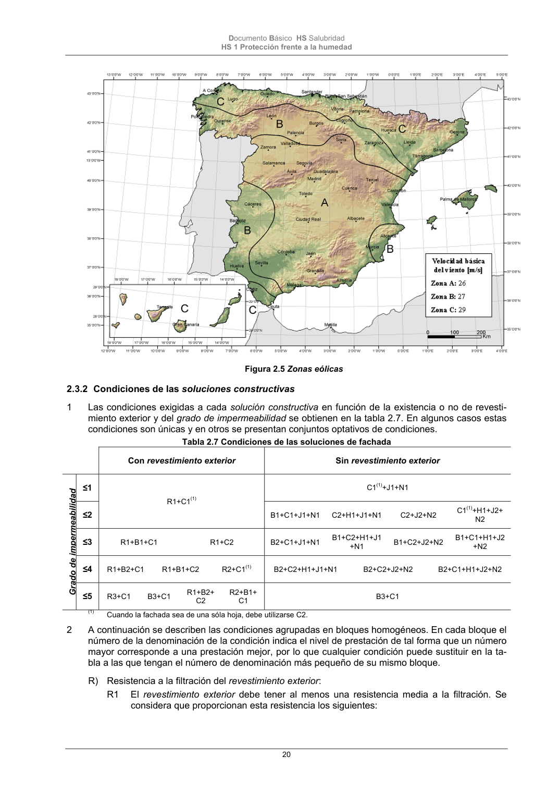

DB-HS Salubridad · edición 2022-06-14 · capa oficial
Documento DB-HS-oficial · SHA-256 del PDF 68df3caacc95f71aee2ec1ba7b2c65ae66155c21e3a8785521b8fdd4fd640d3b
Copia fiel del PDF fuente · Fuente oficial
Ficha de la disposición en la fuente oficial
Formatos: JSON del segmento · Markdown
15 V3 V3 V3 V2 V2 V2 16 - 40 V3 V2 V2 V2 V2 V1 41 – 100 (1) V2 V2 V2 V1 V1 V1 (1) Para edificios de más de 100 m de altura y para aquellos que están próximos a un desnivel muy pronunciado, el grado de exposición al viento debe ser estudiada según lo dispuesto en el DB-SE-AE. Documento Básico HS Salubridad HS 1 Protección frente a la humedad 20 Figura 2.5 Zonas eólicas

